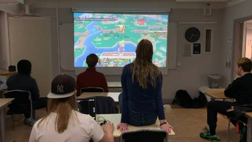

Introduktion
Vad är Weebklubben?
Weebklubben är en ungdomsklubb där man ofta kollar på och spelar olika typer av japansk media, som t.ex anime, manga, datorspel och konsolspel. Exempel på spel kan vara sådana med lokal multiplayer, som t.ex "Super Smash Brothers", eller andra datorspel vi kör på våra bärbara datorer, som t.ex "Osu!".
Vi har möte en gång om veckan där vi typiskt kollar på en olika mängd avsnitt av anime följt av konsolspel under ett möte på ungefär 3 timmar. Klubben deltar också på LAN med oregelbunden frekvens med liknande aktiviteter. Weebklubben har främst medlemmar i gymnasieålder och är riktad till dem men alla får självklart delta i klubben och dess aktiviteter.
Självklart handlar däremot inte allt om själva aktiviteterna utan mer om att bara komma och träffa nya människor. Man kan alltid bara komma förbi för att prata om allt möjligt och bara hänga med alla medlemmar.
Discord-servern
Klubben har en chattserver på chattjänsten Discord (länk till server) som är vårat främsta medel för att att informera om klubbens olika aktiviteter och på chattservern diskuterar medlemmar också diverse aktiviteter relaterade till klubben, för att klubbens aktiviteter och gemenskap inte ska vara exklusiv till mötena. Servern har totalt över 250 medlemmar och utav de kommer ~15-20st varje veckomöte, men det varierar såklart. Gå gärna med och säg hej!